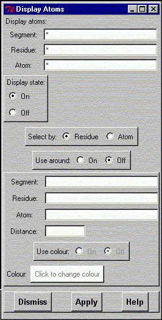

**************************************************************************
Atom display mask widget
Leif Laaksonen CSC 1996
**************************************************************************
Select atom mask to be used for the display ot atoms. Select first the atoms to be displayed or not displayed by giving the atom mask and then defining the action ("On" or "Off") and press the "Apply" button.
It is also possible to use more complicated schemes:
The atom selection can be based on either:

Line command: see atom command
**************************************************************************
LUL/1996
**************************************************************************